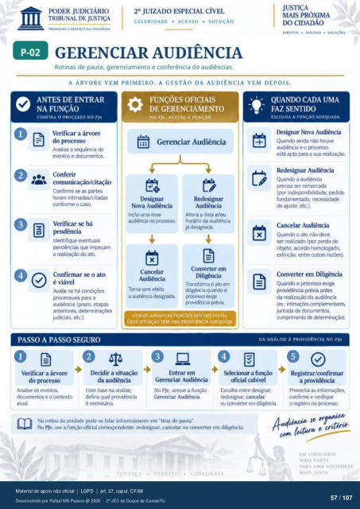

Transcrição automática em português, ainda não revisada. Confira grafia, prazos e termos jurídicos na imagem e no PDF antes de utilizar.
TRABALHO A SERVIÇO DA CIDADANIA
CELERIDADE • ACESSO • SOLUÇÃO
DIREITOS • DIÁLOGO • SOLoçóES
GERENCIAR AUDIÊNCIA
Rotinas de pauta. gerenciamento e conferência de audiências.
A ÁRVORE VEM PRIMEIRO. A GESTÃO DA AUDIÊNCIA VEM DEPOIS.
ANTES DE ENTRAR
NA FUNÇÃO
CONFIRA O NO PJe
Verificar a árvore do processo
a sequência de eventos e
Conferir comunicaçáo/citação
Confirme as partes foram intimadas/citadas
conforme o caso. Verificar se há
Identifique eventuais mdéncias
a realização do ato. Confirmar se o ato
é viável Avalie se há
prcx:essuais para a audiência (prazo, etapas
anteriores, judiciais, etc.).
PASSO A PASSO SEGURO
FUNÇóEs OFICIAIS
DE GERENCIAMENTO
NO PJe. ACESSE A FUNCÀO
Gerenciar Audiência I.ksignar
Nova Audiência Irtlui uma
audiérria prcxzg:). Cancelar
Audiência Torna sem efeito
a audiência designada. Redesignar
Altera a data elou horário da audiência
já desgruda. Converter em
Transforma 0 ato em diligéncia quando O
prcxesso exige prévia
x
UTILIZE APENAS AS FUNÇÕES OFICIAIS DO PJe.
CADA SITUAÇÃO TEM UMA PROVIDÊNCIA ADEQUADA
QUANDO CADA UMA
FAZ SENTIDO
ESCOLHA A FUNÇÃO ADEQUADA
Iksignar Nova Audiência Quando ainda não houve
audiência e o está apto para a sua realiza;ào.
Redesignar Audiência Quando a audiência
precisa ser remarcada (pr indignnibllidade.
de ajuste. etc.). Cancelar Audiência
Quando o ato não deve realizado (g»r perda de
obleto, extinção. entre outras
Converter em Diligência Quando o exige
providência prévia antes da realiz¿ü) da audiência
(ex.: intirnaçees comementares, juntada de
curnçyinrnto de
DA ANÁLISE À PROVIDÊNCIA NO PJe
O Verificar a árvore
do prcxesso Analise os eventos,
úxumentos e 0 contexto atual.
O I)ecidir a situação
da audiêrwia na análise.
defina qual providência Entrar em
Gerenciar Auüncia No a
(krenciar Audiência Selecionar a função
oficial cabível Escolha entre
r«lesignar. cancelar converter em dili*rria
Na rotina da unidade falar informalmente em -tirar de pauta". No PJe. a funçào oficial correspndente: r«lesignar. cancelar ou converter em diligência.
Registrar/confirmar a providência
as confirrne e verifique
o registro no prcxesw.
JUDICIARIO
MAIS FORTE
PARA UMA SOCIEDADE
MAIS JUSTA
Ver também o infográfico original (página 57)
